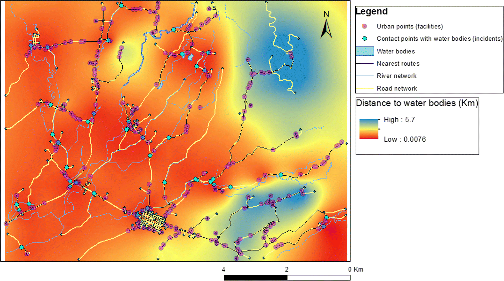
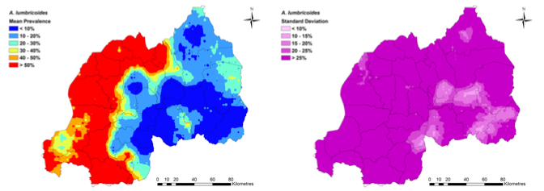
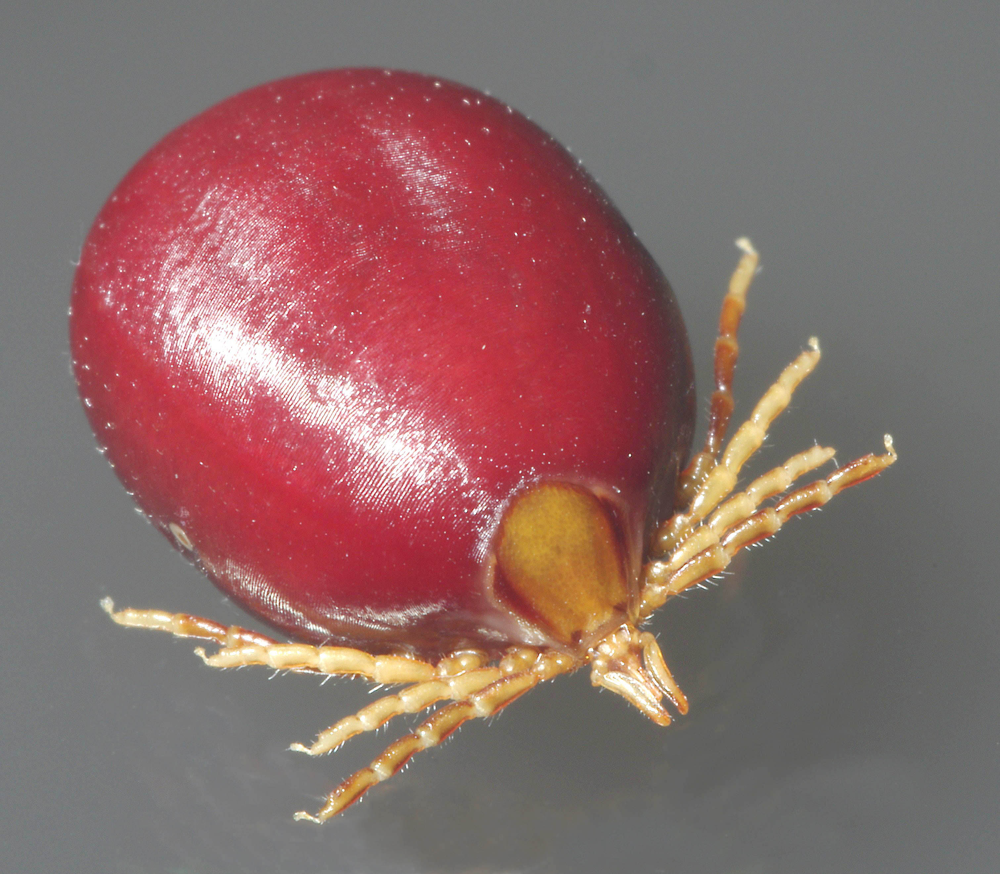
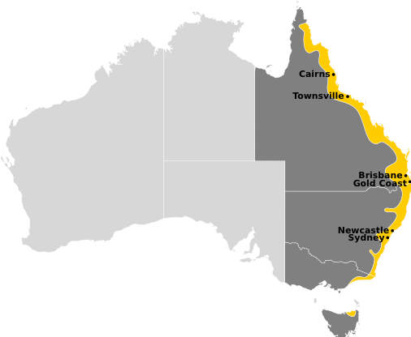
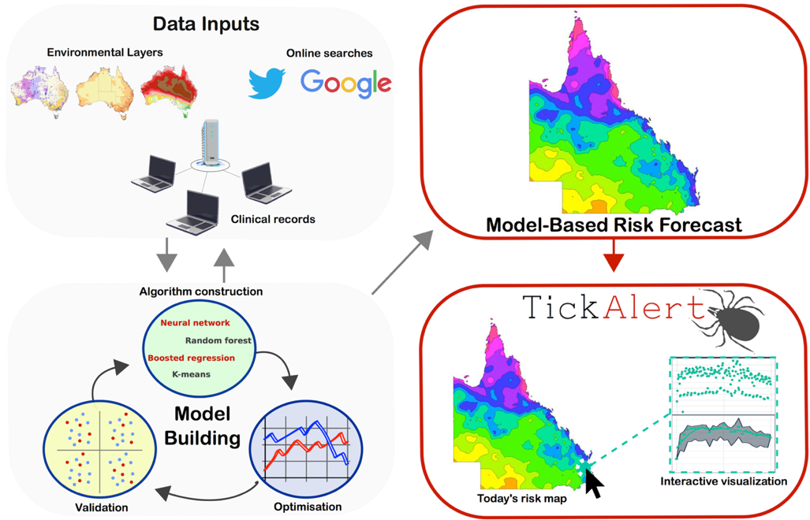

Geographical and environmental patterns of disease


Clark, NJ, Owada, K, Ruberanziza, E, Ortu, G, Umulisa, I, Bayisenge, UJB, Mbonigaba, JB Mucaca, Lancaster, W, Fenwick, A, Soares Magalhães, RJ and Mbituyumuremyi, A. 2020. Parasite associations predict infection risk: incorporating co-infections in predictive models for neglected tropical diseases. Parasites & Vectors 13:1-16.
Ruberanziza, E, Owada, K, Clark, NJ, Umulisa, I, Ortu, G, Lancaster, W, Munyaneza, T, Mbituyumuremyi, A, Bayisenge, U, Fenwick, A, and Soares Magalhães, RJ. 2019. Mapping soil-transmitted helminth parasite infection in Rwanda: estimating endemicity and identifying at-risk populations. Tropical Medicine and Infectious Disease 4:93.
Dhewantara, PW, Mamun, AA, Zhang, Wy, Yin, WW, Ding, F, Guo, D, Hu, W, and Soares Magalhães, RJ. 2018. Geographical and temporal distribution of the residual clusters of human leptospirosis in China, 2005–2016. Scientific Reports 8:16650.
Dhewantara, PW, Mamun, AA, Zhang, Wy, Yin, WW, Ding, F, Guo, D, Hu, W, Costa, F, Ko, AI, and Soares Magalhães, RJ. 2018. Epidemiological shift and geographical heterogeneity in the burden of leptospirosis in China. Infectious Diseases of Poverty 7:57.

